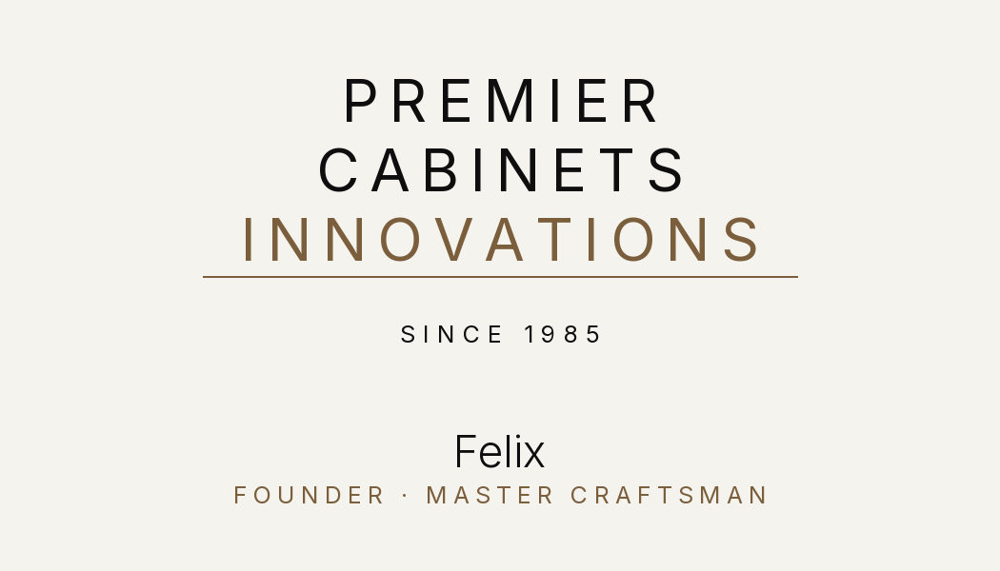
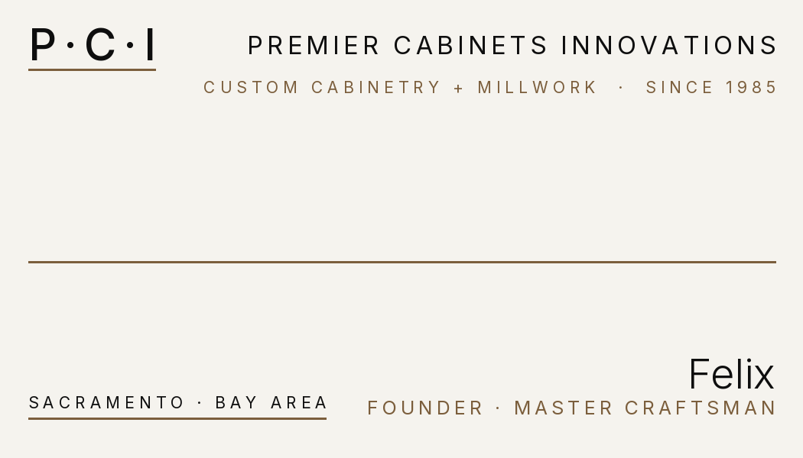
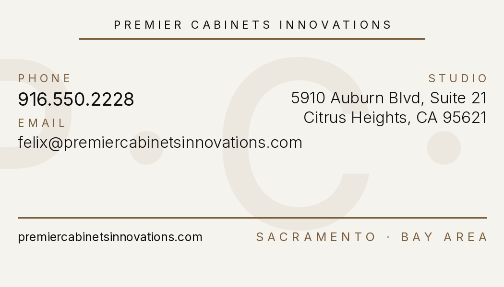

Back to Premier Cabinets
Business Cards · Design Review
Two design directions for Felix's business cards, both built from the locked brand system. Print-ready 300dpi, 3.5 × 2 inch trim with bleed.
A — Front
Logo-Forward Recommended

B — Front
Monogram-Forward

C — Back
Card Back (shared)

01 — Print Specs
Locked print specifications
- Paper stock. Soft-touch matte, 32lb (130 gsm) minimum. Vistaprint "Premium 32lb Soft Touch." Velvet hand-feel, mutes the cream paper to a warm chalk tone.
- Alternative stock. Premium uncoated, 38lb+. Closest to a letterpress card. Most Somerville-aligned finish.
- Avoid. Glossy, high-gloss, UV-coated. They fight the editorial direction.
- Trim size. 3.5 × 2 inches (US standard).
- Bleed. 0.125 inch all sides. Pixel size with bleed: 1087 × 625 px.
- Resolution. 300 DPI.
- Color mode. RGB (printer converts to CMYK. Palette is print-safe.)
- Safe area. All critical text 0.125 inch inside the trim edge (0.25 inch from bleed edge).
- Recommended quantity. 500 cards for kickoff. 1,000 if a designer-association event is booked. 250 only to validate first.
- Recommended printer. Vistaprint (preferred) or Moo. Both accept the 3.625 × 2.125 inch upload at 300 DPI.
02 — Upload
Vistaprint upload instructions
- Go to vistaprint.com/business-cards and start a new standard horizontal card order (3.5 × 2 inches).
- Choose "Upload your own design" for both front and back.
- Pick a front design (A or B — Design A recommended).
- Upload these two files:
- Front.
front-design-A-logo-forward.pngorfront-design-B-monogram-forward.png(NOT the-trimversions) - Back.
back.png(NOTback-trim.png)
- Front.
- Vistaprint will show the bleed / trim / safe-area overlay. Confirm bleed extends to the dotted outer line, and all text is inside the inner safety line. (It is. The files were built to a 0.25 inch margin.)
- Skip any Vistaprint "design enhancements" or upsells. The file is final.
- Pick paper stock (soft-touch matte 32lb) and quantity (500).
Moo. Same process. Moo accepts the same 3.625 × 2.125 inch upload at 300 DPI. Their preview tool flags the bleed, trim, and safe zones the same way.